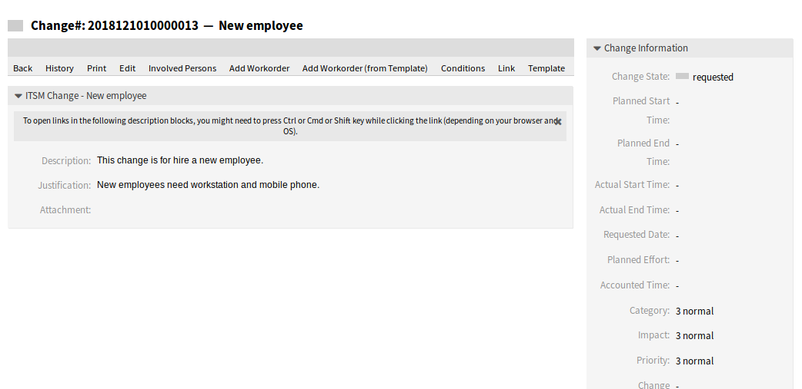

计划表¶
使用此屏幕可根据特定条件过滤ITSM变更。 此概览屏幕位于 ITSM变更 菜单的 计划表 菜单项中。

ITSM变更计划表屏幕
可以通过单击概览小部件标题中的状态名称来过滤变更。 状态名后面的数字表示每个状态有多少变更。
参见
请参阅设置 ITSMChange::Frontend::AgentITSMChangeSchedule###Filter::ChangeStates 以定义将在概览中用作过滤器的变更状态。
若要限制每页显示的变更数量：
- 点击概览标题右上角的齿轮图标。
- 选择每页显示的最大变更数。
- 点击 保存 按钮。
若要查看变更的详细信息：
- 点击一个变更行。

ITSM变更详情屏幕
可以通过系统配置定义显示的属性。 并非所有属性都默认显示。 可能的属性是：
ActualEndTime实际结束时间- 变更实施完成的日期和时间。
ActualStartTime实际开始时间- 开始实施变更的日期和时间。
Category类别- 变更的类别或类型。
ChangeBuilder变更创建人- 变更创建人的姓名。
ChangeManager变更经理- 变更经理的姓名。
ChangeNumber变更编号- 系统生成的变更编号。
ChangeState变更状态- 变更状态。
ChangeStateSignal变更状态信号- 变更状态的指示灯，显示为交通灯。
ChangeTime修改时间- 变更被修改的日期和时间。
ChangeTitle变更标题- 变更的名称。
CreateTime创建时间- 变更被创建的日期和时间。
DynamicField_ChangeFieldName动态字段_变更字段名- 与该变更关联的动态字段。
Impact影响- 预期的变更效果。
PlannedEndTime计划结束时间- 预计变更实施完成日期和时间。
PlannedStartTime- 预计变更实施开始日期和时间。
Priority优先级- 此变更的优先级别。
RequestedTime请求时间- 客户期望的实施日期。
Services服务- 受此变更影响的服务。
WorkOrderCount工作指令数量- 与此变更相关的工作指令数量。
参见
请参阅设置 ITSMChange::Frontend::AgentITSMChangeSchedule###ShowColumns 来定义显示的属性。